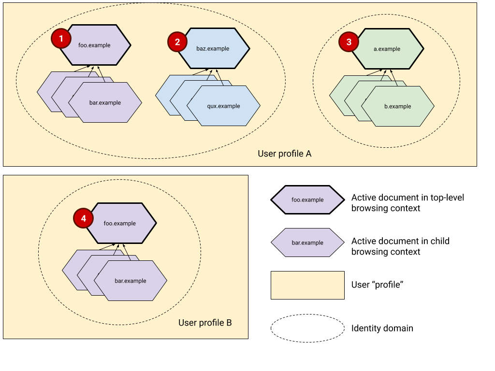

Identity Domains

Diagram showing relationships between clusters of documents and identity domains. foo.example and baz.example belong to the same first party set. a.example has no first-party relationship with any other domain.
For the sake of making it easier to write about things, can we come up with a name for the scope within which we consider it a given that the user has a shared or trivially joinable identity?
I’ve called it the “identity domain” in these diagrams, but feel free to bikeshed or point me at existing terminology for it.
The “Identity domain” has the following properties:
-
All active documents in descendent browsing contexts belong to the same identity domain as the active document in the top-level browsing context.
(See each cluster of browsing contexts in the diagram above)
-
All active documents in top-level browsing contexts that share the same site also share the same identity domain.
(In the diagram above,
foo.example(cluster 1) andbaz.example(cluster 2) belong to the same first-party set, hence they are considered to belong to the same identity domain. However a.example in cluster 3 does not belong to the same identity domain because there’s no first party relation between a.example and any other top level domain in the diagram.) -
All private client state (open sockets, socket pools, cookies, storage, permissions / content settings, transient caches of credentials, cached resources, service workers) for all documents included in an identity domain also belong to the identity domain.
-
Identity domains don’t span browser profiles.
(See clusters 1 and 4 in the diagram above. Both share top-level origins, but don’t share identity domains because they are in two different browser profiles.)
-
Identity domains don’t span browsers.
(Derived from above).
-
Identity domains don’t survive browsing data erasures. [^1]
(“Clear browsing data” effectively ends all identity domains.)
Notes
-
The identity domain is a privacy boundary. The boundary is something that’s asserted by the UA and doesn’t depend on the cooperation of sites. I.e. assume that sites involved are worst case actors.
- Not to be confused with security boundaries like those imposed via Content Security Policy.
-
The definition assume that sites can share information out-of-band. I.e the boundary should be assertable even if sites collude.
- The same site can appear in multiple identity domains. For example, re-identification is equivalent to a single site joining an identity across disjoint domains.
-
Two identity domains can be linked externally by sharing a unique identifier between the two domains.
-
WRT federated identity (as detailed in WebID) multiple relying parties join identity domains by virtue of shared unique identifiers like email address. Similarly identity providers can also generate and use unique identifiers linking domains.
-
Using the same email address in multiple identity domains can effectively join the domains. More examples exist, but you get the idea.
-
We likely need another term for describing externally joined identity domains. In these cases the UA doesn’t necessarily know or can prevent joined identity domains.
-
-
Concepts like “logging out” can be defined in terms of destroying an identity domain on the User Agent.
-
Destroying an identity domain must necessarily remove all associated local storage, both transient and persisted. This requires a clear demarcation of which constructs “belong” to which identity domain.